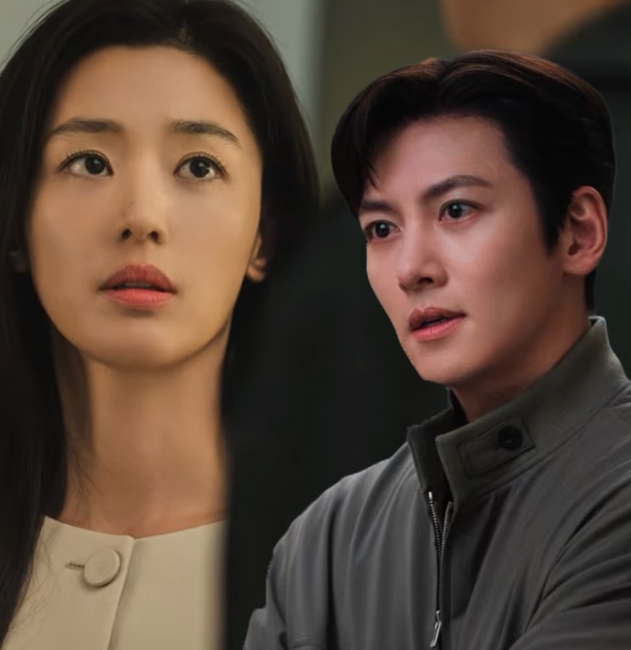
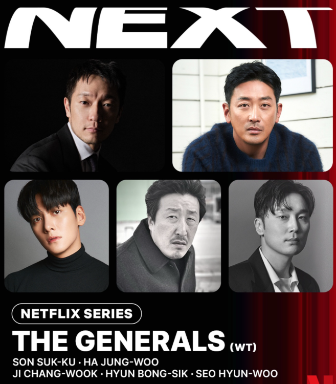
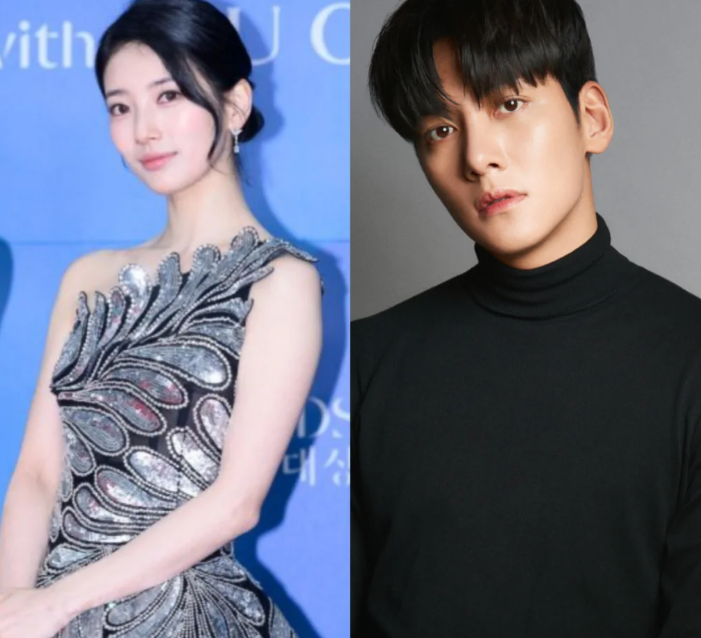

استعرض أحدث المسلسلات، الأفلام، والمشاريع القادمة للنجم جي تشانغ ووك

مسلسل فانتازيا رومانسية كوميدية منتظر، يشارك في بطولته جي تشانغ ووك مع النجمة جون جي هيون. تدور قصة حب خيالية وغير تقليدية بين كائن ساحر وبشري.

فيلم سينمائي ضخم مرتقب من إنتاج نتفليكس وعمل مشترك، يجسد فيه جي تشانغ ووك شخصية (Heo Hak-seong) في دراما سياسية وتاريخية تحبس الأنفاس.

مقتبس عن رواية الويب الشهيرة التي تدور أحداثها في إطار تاريخي وخيالي حول الإمبراطورية وصراع السلطة، وسط ترقب كبير لمشاركة النجم.